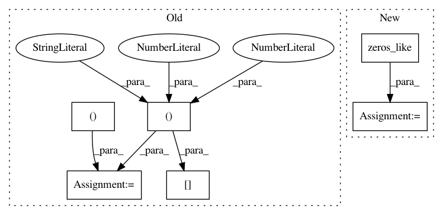

c1a72b36444c8027c27c2dc02dc03d5b69a5e389,keras/layers/recurrent_convolutional.py,LSTMConv2D,get_constants,#LSTMConv2D#Any#,482
Before Change
if 0 < self.dropout_W < 1:
input_shape = self.input_spec[0].shape
input_dim = input_shape[-1]
ones = K.ones_like(K.reshape(x[:, 0, 0], (-1, 1)))
ones = K.concatenate([ones] * input_dim, 1)
B_W = [K.in_train_phase(K.dropout(ones, self.dropout_W), ones)
for _ in range(4)]
constants.append(B_W)
After Change
constants.append([K.cast_to_floatx(1.) for _ in range(4)])
if 0 < self.dropout_W < 1:
ones = K.zeros_like(x)
ones = K.sum(ones, axis=1)
ones = ones + 1
B_W = [K.in_train_phase(K.dropout(ones, self.dropout_W), ones)
for _ in range(4)]
In pattern: SUPERPATTERN
Frequency: 3
Non-data size: 6
Instances
Project Name: keras-team/keras
Commit Name: c1a72b36444c8027c27c2dc02dc03d5b69a5e389
Time: 2016-10-13
Author: jeanmichel.arbona@gmail.com
File Name: keras/layers/recurrent_convolutional.py
Class Name: LSTMConv2D
Method Name: get_constants
Project Name: keras-team/keras
Commit Name: 9efe17aeeafc6d8c1406a48f82fc63731d4b2b6c
Time: 2016-02-29
Author: francois.chollet@gmail.com
File Name: keras/layers/recurrent.py
Class Name: Recurrent
Method Name: get_initial_states
Project Name: keras-team/keras
Commit Name: 45a10bc6d708fade197a37bfbc62312caf70e6a7
Time: 2017-02-17
Author: francois.chollet@gmail.com
File Name: keras/layers/convolutional_recurrent.py
Class Name: ConvLSTM2D
Method Name: get_constants